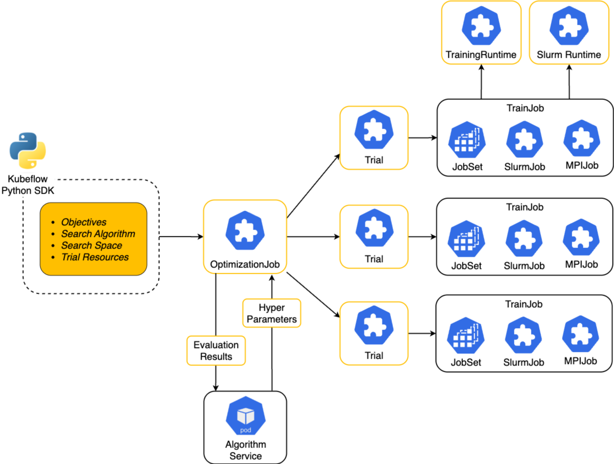

KEP-46: Hyperparameter Optimization in Kubeflow SDK¶
Summary¶
Currently, Katib maintains its own Python SDK at
/katib/sdk/python/v1beta1/
with auto-generated API models
and a KatibClient for hyperparameter (HP) optimization. As we build a unified Kubeflow SDK to provide users with a
consistent experience across all Kubeflow projects, we need to design and implement a client to support hyperparameter
optimization jobs following the same pattern established with the Trainer migration.
Motivation¶
Hyperparameter tuning is a critical step in the AI lifecycle, as it directly impacts model performance and
generalization. However, the current Kubeflow SDK lacks built-in support for seamlessly optimizing hyperparameters for
TrainJobs, making the process manual and less efficient.
Today, users must:
Install and manage separate Katib SDK alongside Trainer SDK (part of Kubeflow SDK)
Define a Katib
Experiment(algorithm, search space) to referenceTrainJobWire
trialParametersinto theTrainJob’s command/args/envTrack dependencies and version compatibility
Goals¶
Publish Katib models to PyPI to build the new client.
Design the new client in Kubeflow SDK to support HP optimization jobs on Kubernetes.
Using the Katib
Experimentto orchestrate optimization jobs.
Non-Goals¶
The following no-goals describe what we are not planning to support in OptimizationJob CRD in the long-term. If you are
an existing Katib user and depend on these features, please let Kubeflow maintainers know as soon as you can!
Support for arbitrary CRDs within the Trial template. Only
TrainJobwill be supportedSupport for resume policies of Katib
ExperimentSupport for neural architecture search. In the future, we can design other CRD for it
Support for additional metrics collection (e.g. which are irrelevant to objective metrics). Metrics that are not directly related to objective optimization should be collected through external services such as MLFlow, W&B, or the Kubeflow AI Hub/Registry.
Support for pull-based metrics collectors. Users can only push objective metrics via Kubeflow SDK:
optimizer.report_metrics({"accuracy": 0.99})This is under discussion, since without pull-based metrics collectors it might be challenging to support
BuiltinTrainers.
Proposal¶
We propose several names for the new client to perform hyperparameter optimization (feel free to propose alternative names):
OptimizerClient().optimize()SearcherClient().search()SweeperClient().sweep()StudyClient().study()…
The following diagram shows how OptimizationJob will orchestrate HP tuning jobs. Every Trial will create a TrainJob that
can run various batch jobs (e.g. JobSet, MPI-style jobs, SlurmJobs, etc.):

User Stories¶
Story 1: Simple Hyperparameter Optimization¶
As an AI Practitioner, I want to define a TrainJob and optimize its hyperparameters using a simple API, so that I can
quickly find the best model configuration.
Story 2: Advanced HPO with Custom Algorithms¶
As an AI Practitioner, I want to use custom optimization algorithms with specific configurations, so that I can apply domain knowledge to my hyperparameter search.
Story 3: BuiltinTrainer Optimization¶
As an AI Practitioner, I want to optimize hyperparameters for BuiltinTrainers seamlessly, so that I can fine-tune LLMs
without writing custom training code.
Design Details¶
OptimizerClient API¶
Step 1: User defines the TrainJob with TrainerClient¶
from kubeflow.trainer import CustomTrainer, TrainerClient, Initializer, HuggingFaceDatasetInitializer
from kubeflow.optimizer import OptimizerClient, Objective, RandomSearch, TrialConfig, TrainJobTemplate, Search, report_metrics
def train_func(lr: float, num_epochs: int):
# Your training logic here
print(lr, num_epochs)
report_metrics({"accuracy": 0.80})
trainjob_template = TrainJobTemplate(
trainer=CustomTrainer(
func=train_func,
func_args={"lr": 0.1, "num_epochs": 5},
),
initializer=Initializer(
model=HuggingFaceDatasetInitializer(storage_uri="hf://qwen3.2-instruct")
),
runtime=TrainerClient().get_runtime(name="torch-distributed"),
)
# Create a regular TrainJob
TrainerClient().train(**trainjob_template)
Step 2: User wants to optimize Hyperparameters for their TrainJobs¶
Simple Version:
OptimizerClient().optimize(
trial_template=trainjob_template,
trial_config=TrialConfig(
num_trials=10,
),
search_space={
"lr": Search.loguniform(0.01, 0.05),
"num_epochs": Search.choice([2, 4, 5]),
},
objectives=[
Objective(metric="accuracy"),
],
)
Extended Version:
OptimizerClient().optimize(
trial_template=trainjob_template,
trial_config=TrialConfig(
num_trials=10,
parallel_trials=2,
max_failed_trials=3
),
objectives=[
Objective(metric="accuracy", direction="maximize"),
],
algorithm=RandomSearch(random_state=10),
)
In the future, Trial templates can be extended to support SparkJobs or other types of Jobs.
Creating Jobs with TrainJobTemplate API
### Create TrainJob
TrainJobTemplate.train()
### Create OptimizationJob
trainjob_template.optimize(
search_space={
"lr": Search.loguniform(0.01, 0.05),
"num_epochs": Search.choice([2, 4, 5]),
},
objectives=[
Objective(metric="accuracy"),
],
)
Katib Experiment API¶
The following Katib Experiment will be created to support the above API.
apiVersion: kubeflow.org/v1beta1
kind: Experiment
metadata:
name: optimization-job
spec:
objective:
type: maximize
objectiveMetricName: accuracy
algorithm:
algorithmName: random
algorithmSettings:
- name: random_state
value: 10
parallelTrialCount: 2
maxTrialCount: 10
maxFailedTrialCount: 3
parameters:
- name: lr
parameterType: double
feasibleSpace:
min: "0.01"
max: "0.05"
- name: num_epochs
parameterType: categorical
feasibleSpace:
list:
- "2"
- "4"
- "5"
trialTemplate:
primaryContainerName: node
trialParameters:
- name: lr
description: Learning rate for the training model
reference: lr
- name: num_epochs
description: Momentum for the training model
reference: num_epochs
trialSpec:
apiVersion: trainer.kubeflow.org/v1alpha1
kind: TrainJob
spec:
trainer:
command:
- bash
- -c
- |2-
read -r -d '' SCRIPT << EOM
def train_func(lr: float, num_epochs: int):
print(f"learning rate: {lr}, epochs: {num_epochs}")
train_func(${trialParameters.lr}, ${trialParameters.num_epochs})
EOM
printf "%s" "$SCRIPT" > "1666146569.py"
torchrun "1666146569.py"
numNodes: 2
runtimeRef:
apiGroup: trainer.kubeflow.org
kind: ClusterTrainingRuntime
name: torch-distributed
Potential API for OptimizationJob CRD¶
In the future, we can design the following CRD to align with the API naming. In the first release of Kubeflow SDK, we will still leverage Katib Experiments to orchestrate OptimizationJobs. But eventually, we will migrate to the new CRD.
apiVersion: optimizer.kubeflow.org/v1alpha1
kind: OptimizationJob
metadata:
name: optimization-job
spec:
objectives:
- metric: accuracy
direction: minimize
goal: 0.99
algorithm:
name: random
settings:
- name: random_state
value: 10
searchSpace:
- name: lr
continuous:
distribution: loguniform
min: 0.01
max: 0.5
- name: num_epochs
categorical:
choices:
- 2
- 4
- 5
trialConfig:
num_trials: 10
parallel_trials: 2
max_failed_trials: 3
trialTemplate:
apiVersion: trainer.kubeflow.org/v1alpha1
kind: TrainJob
spec:
trainer:
command:
- bash
- -c
- |2-
read -r -d '' SCRIPT << EOM
def train_func(lr: float, num_epochs: int):
print(f"learning rate: {lr}, epochs: {num_epochs}")
train_func(${searchSpace.lr}, ${searchSpace.num_epochs})
EOM
printf "%s" "$SCRIPT" > "1666146569.py"
torchrun "1666146569.py"
numNodes: 2
runtimeRef:
apiGroup: trainer.kubeflow.org
kind: ClusterTrainingRuntime
name: torch-distributed
OptimizerClient for BuiltinTrainer¶
This example shows how optimize() API can be used with BuiltinTrainers to seamlessly optimize HPs for LLM fine-tuning
jobs.
Question 1: How can we collect metrics from TrainJobs which use BuiltinTrainers?
trainjob = TrainJobTemplate(
trainer=BuiltinTrainer(
config=TorchTuneConfig(
peft_config=LoraConfig(
quantize_base=True,
),
)
),
initializer=Initializer(
model=HuggingFaceDatasetInitializer(storage_uri="hf://qwen3.2-instruct")
),
runtime=TrainerClient().get_runtime(name="torchtune-qwen-3.2"),
)
OptimizerClient().optimize(
search_space={
"peft_config.lora_rank": Search.choice([2, 4, 5]),
},
trial_template=trainjob,
)
Trial Scheduler Capabilities¶
In the future, we can extend the TrialConfig API to support Early Stopping or other advanced scheduler capabilities
like PopulationBasedTraining or ASHA.
### Population based training
OptimizerClient().optimize(
...
trial_config=TrialConfig(
scheduler=PBTScheduler(
num_startup_trials=5
),
),
)
### Median Stopping Rule
OptimizerClient().optimize(
...
trial_config=TrialConfig(
scheduler=MedianStoppingRule(
num_startup_trials=5
),
),
)
Migration Plan for Katib API Models¶
Extract and Publish API Models¶
In the first iteration, we will submit HP optimization jobs using Katib Experiment API. For that, we should extract
Katib API models into a separate PyPI package following the Trainer pattern:
https://github.com/kubeflow/katib/tree/master/sdk/python/v1beta1/kubeflow/katib/models
Steps:
Move models to
kubeflow-katib-apipackagePublish to PyPI
Import it from Kubeflow SDK repo
├── kubeflow_katib_api/
│ ├── models/
│ │ ├── __init__.py
│ │ └── v1beta1_*.py
│ └── __init__.py
├── pyproject.toml
└── README.md
Create Optimizer Package¶
Implement the new client under sub-folder in the Kubeflow SDK:
sdk/kubeflow/
├── trainer/
└── optimizer/
├── __init__.py
├── api/
├── backends/
├── constants/
├── types/
└── utils/
Update imports to use kubeflow-katib-api
Update pyproject.toml:
dependencies = [
"kubernetes>=27.2.0",
"kubeflow-trainer-api>=2.0.0",
"kubeflow-katib-api>=0.18.0",
]
Update references, documentation and examples
Notes/Constraints/Caveats¶
TODO(Akshay): Propose ideas on how to manage initializers for Trials.
Metrics collection for
BuiltinTrainersneeds further discussion and design.The initial release will use Katib
Experimentsas the backend, with a future migration toOptimizationJobCRD.
Test Plan¶
Unit Tests:
Test
OptimizerClientAPI with various configurationsTest
Searchspace definitions and conversionsTest
ObjectiveandAlgorithmconfigurations
E2E Tests:
Add E2E tests covering Optimizer integration with Trainer
Test Katib
Experimentcreation fromOptimizerClient
Implementation History¶
2025-09-24: Creation date
Alternatives¶
Alternative 1: OptimizationBuilder Pattern¶
As discussed on the call, we can offer OptimizationBuilder() in addition to the default optimize() API:
https://youtu.be/7QR9KEQw29M?t=3234
class OptimizationBuilder:
"""A Builder for constructing and running an optimization task."""
def __init__(self):
self._objectives = []
self._algorithm = None
self._trial_policy = {}
self._trial_template_config = {}
self._trainer_config = {}
self._initializer = None
self._runtime = None
def add_objective(self, metric: str, direction: str, goal: float) -> 'OptimizationBuilder':
"""Adds a training objective."""
self._objectives.append(Objective(metric=metric, direction=direction, goal=goal))
return self
def with_random_search(self, random_state: int) -> 'OptimizationBuilder':
"""Sets the optimization algorithm to RandomSearch."""
self._algorithm = RandomSearch(random_state=random_state)
return self
def set_trial_policy(self, parallelism: int, completions: int, max_restarts: int, active_deadline_seconds: int) -> 'OptimizationBuilder':
"""Configures the policy for running trials."""
self._trial_policy = {
"parallelism": parallelism,
"completions": completions,
"max_restarts": max_restarts,
"active_deadline_seconds": active_deadline_seconds
}
return self
def configure_trainer(self, train_func, **hyperparameters) -> 'OptimizationBuilder':
"""Defines the training function and its searchable hyperparameters."""
self._trainer_config = {"func": train_func, "func_args": hyperparameters}
return self
def with_huggingface_initializer(self, storage_uri: str) -> 'OptimizationBuilder':
"""Sets the model initializer from a Hugging Face URI."""
model_init = HuggingFaceDatasetInitializer(storage_uri=storage_uri)
self._initializer = Initializer(model=model_init)
return self
def set_runtime(self, runtime_name: str) -> 'OptimizationBuilder':
"""Sets the distributed training runtime."""
self._runtime = TrainerClient().get_runtime(name=runtime_name)
return self
def run(self):
"""Assembles all components and runs the optimization."""
if not all([self._objectives, self._algorithm, self._trial_policy, self._trainer_config, self._initializer, self._runtime]):
raise ValueError("Incomplete configuration. Please configure all required components before running.")
final_trial_template = TrialTemplate(
trainer=CustomTrainer(**self._trainer_config),
initializer=self._initializer,
runtime=self._runtime
)
print("Starting optimization with the built configuration...")
return OptimizerClient().optimize(
objectives=self._objectives,
algorithm=self._algorithm,
trial_policy=TrialPolicy(**self._trial_policy),
trial_template=final_trial_template,
)
# Usage
builder = OptimizationBuilder()
optimization_result = (
builder.add_objective(metric="accuracy", direction="minimize", goal="0.99")
.with_random_search(random_state=10)
.set_trial_policy(
parallelism=2,
completions=10,
max_restarts=3,
active_deadline_seconds=400
)
.with_huggingface_initializer(storage_uri="hf://qwen3.2-instruct")
.set_runtime(runtime_name="torch-distributed")
.configure_trainer(
train_func=train_func,
lr=Search.loguniform("4", "8"),
num_epochs=Search.choice([2, 4, 5])
)
.run()
)
print("Optimization complete!")
Alternative 2: Using TrialPolicy¶
OptimizerClient().optimize(
objectives=[
Objective(
metric="accuracy",
direction="maximize",
goal="0.99"
)
],
algorithm=RandomSearch(random_state=10),
trial_policy=TrialPolicy(
parallelism=2,
completions=10,
max_restarts=3,
active_deadline_seconds=400,
),
trial_template=TrialTemplate(
trainer=CustomTrainer(
func=train_func,
func_args={
"lr": Search.loguniform("0.01", "0.05"),
"num_epochs": Search.choice([2, 4, 5]),
},
num_nodes=2,
),
initializer=Initializer(
model=HuggingFaceDatasetInitializer(storage_uri="hf://qwen3.2-instruct")
),
runtime=TrainerClient().get_runtime(name="torch-distributed"),
),
)
Alternative 3: Wrap Everything Under optimize() API¶
from kubeflow.trainer import CustomTrainer, TrainerClient, Initializer, HuggingFaceDatasetInitializer
from kubeflow.optimizer import OptimizerClient, Objective, Search
trainer = CustomTrainer(
func=train_func,
func_args={
"lr": Search.loguniform(1e-5, 1e-3),
"batch_size": Search.choice([8, 16, 32]),
},
)
OptimizerClient().optimize(
trainer=trainer,
runtime_ref=TrainerClient().get_runtime(name="torch-distributed"),
initializer=Initializer(
dataset=HuggingFaceDatasetInitializer(storage_uri="hf://qwen3.2-instruct")
),
objective="accuracy",
direction="maximize",
goal=0.99,
parallelism=2,
completions=10,
max_restarts=3,
active_deadline_seconds=400,
)
Alternative 4: Using OptimizeConfig and ExecutionConfig¶
from kubeflow.trainer import CustomTrainer, TrainerClient, Initializer, HuggingFaceDatasetInitializer
from kubeflow.optimizer import OptimizerClient, Objective, Search
trainer = CustomTrainer(
func=train_func,
func_args={
"lr": Search.loguniform(1e-5, 1e-3),
"batch_size": Search.choice([8, 16, 32]),
},
)
OptimizerClient().optimize(
trainer=trainer,
runtime_ref=TrainerClient().get_runtime(name="torch-distributed"),
initializer=Initializer(
dataset=HuggingFaceDatasetInitializer(storage_uri="hf://qwen3.2-instruct")
),
optimize=OptimizeConfig(
objective="accuracy",
direction="maximize",
goal=0.99,
completions=10,
parallelism=2,
),
execution=ExecutionConfig(
active_deadline_seconds=400,
max_restarts=3,
),
)